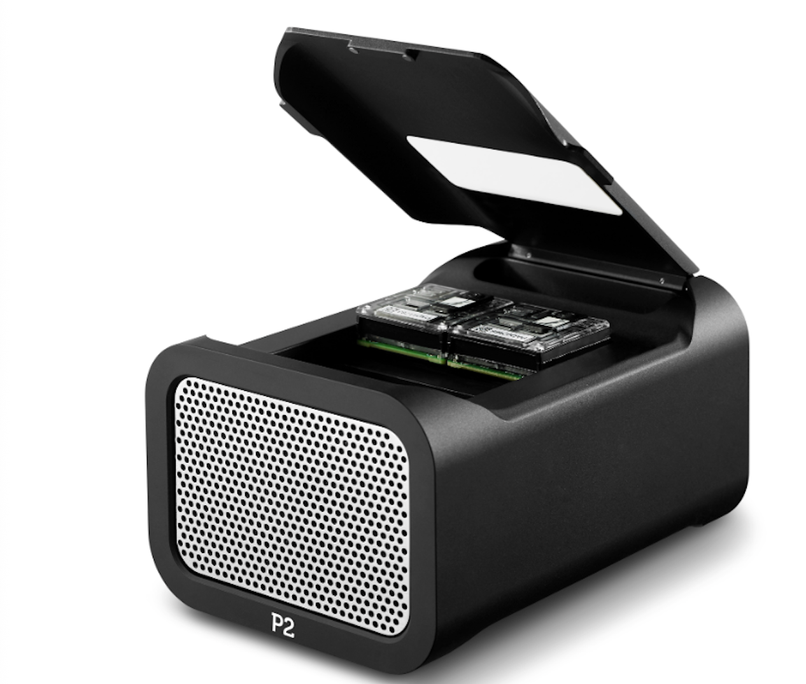
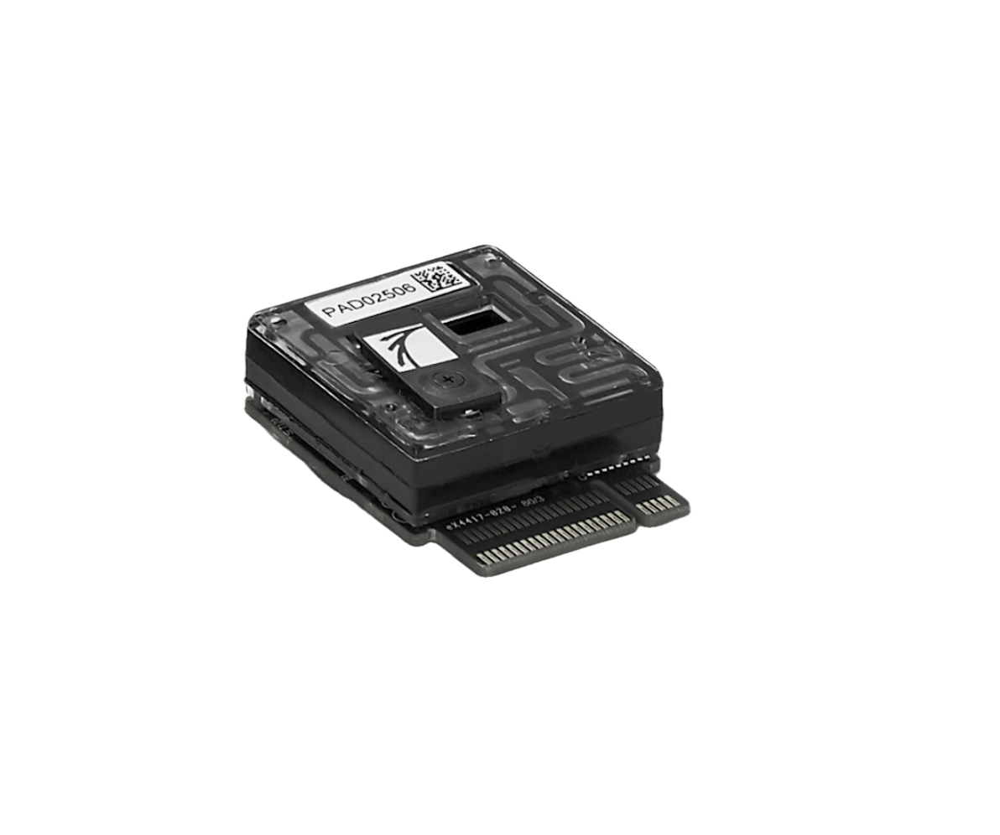
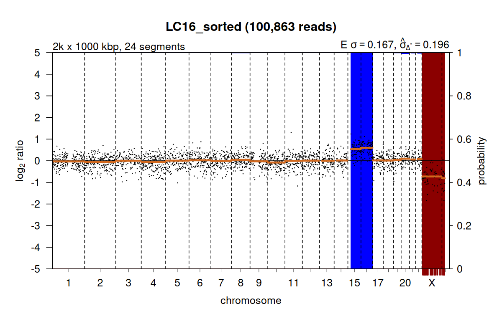
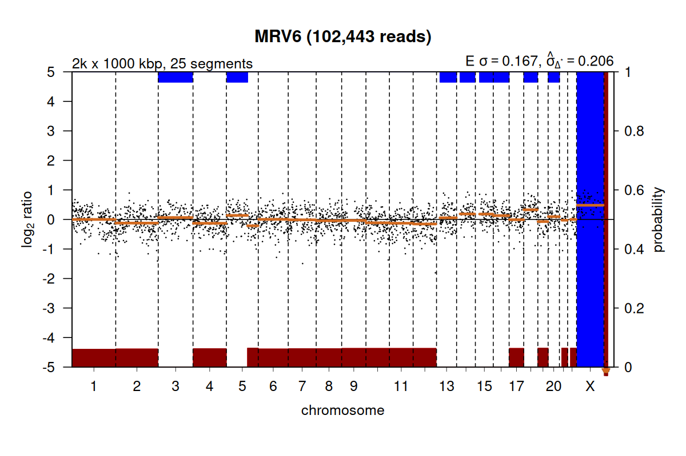
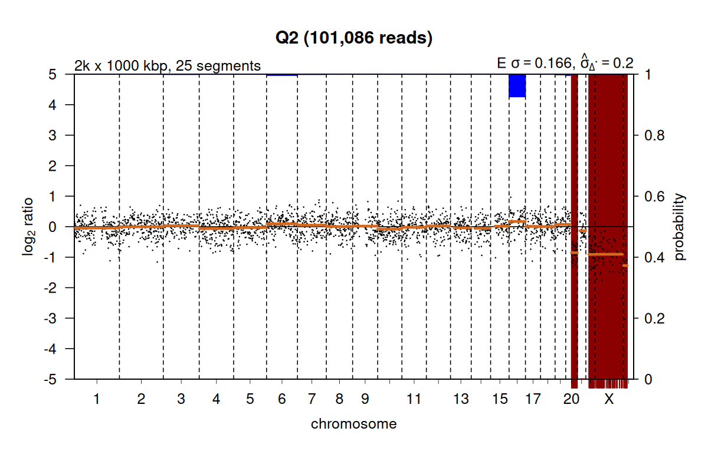
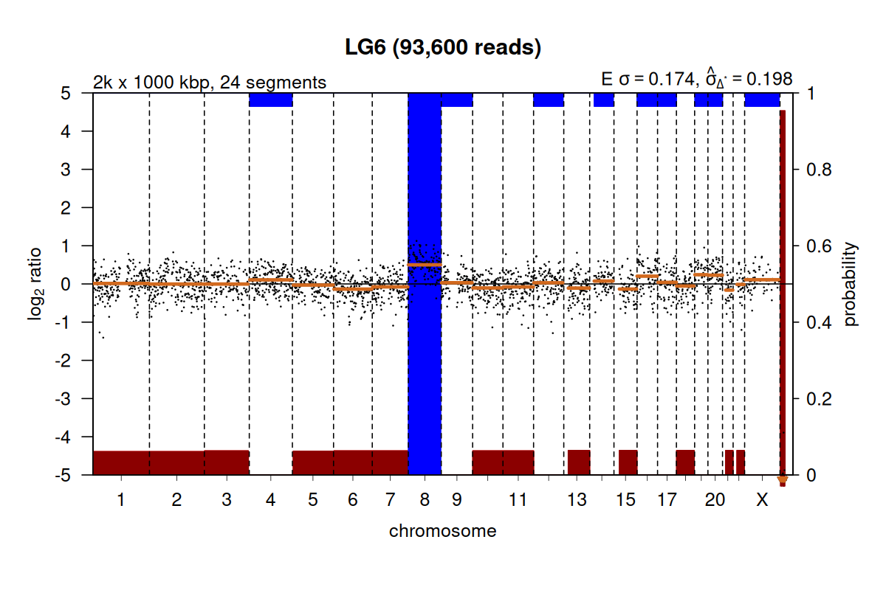
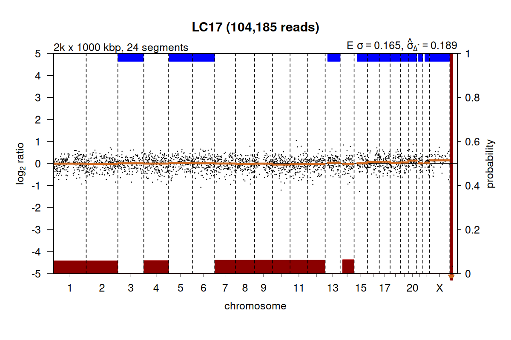
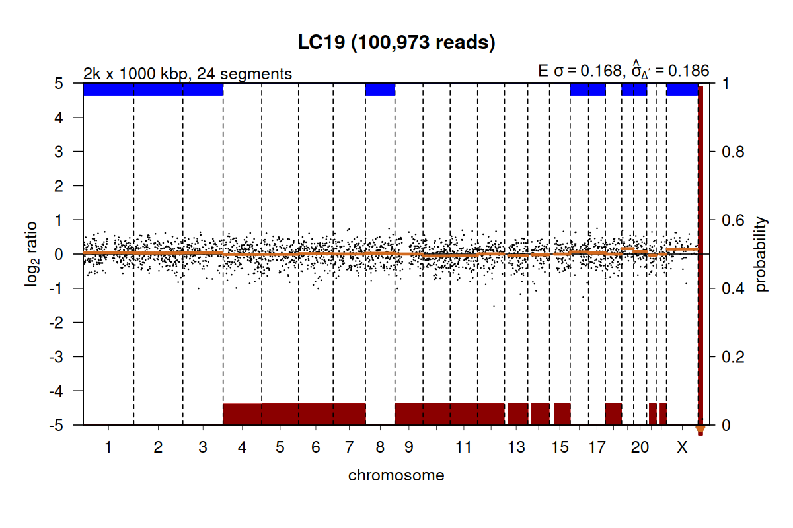
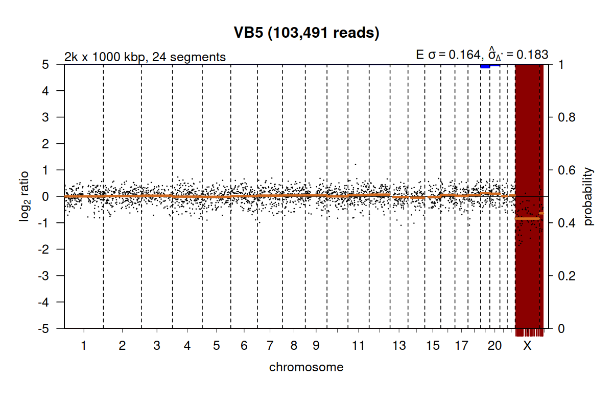
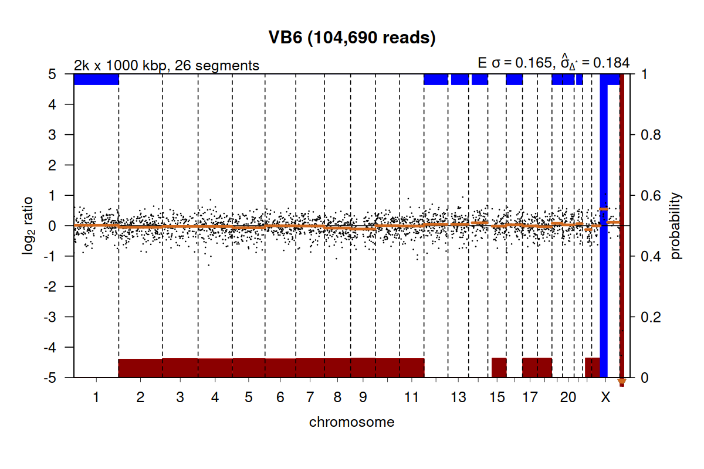

Apéndice Experimental
Insumos: Apéndice técnico. Reporte Havanna FCEN.
Delivery 4: Apéndice económico.
1. Ensayo Havanna- Rendimiento
En enero 2026 el servicio de genómica de la FCEN secuenció muestras de ADN tomadas del freezer de Reprofert:
Las muestras consistieron en 15 ADN congelados (-20ºC), extraídos de biopsias embrionarias previamente amplificadas con Sureplex, derivadas de estudios de PGT-A realizados durante los años 2016 al 2019, utilizando secuenciación Illumina.
La secuenciación en FCEN se llevó a cabo en un equipo PromethION 2 Solo (Figura 1 A), con un flow cell FLO-PRO114M1 (Figura 1 B), el cual produce ≈30 veces más secuencia por unidad de tiempo que el flow cell del MinION.
La corrida se detuvo a las 18 hrs y produjo 37.24 Gb; 21.4Gb (Q≥8 ≈ 57.5%) y 10.5 (28.2%) fail. El total de lecturas ~60M; 42M (Q≥8 ≈ 70.0%), 19M (31,6%) fail. El N50 = 552pb.

A
BEste rendimiento es verificable si se considera que se obtuvieron 37Gb en 18 hs de corrida (~2.05 Gb/h). Comparando la totalidad de Gb producidos por Tan y col. ( QC_in=1.07 Gb + QC_out ~35%), la cantidad producida es de ≈ 32 veces más.
2. Ensayo Havanna- Resultados por muestra
El ensayo Havanna generó por muestra, 1.03 Gb, y 2.3 M de lecturas2. Esto es, el total de bases y lecturas producidas por Tan, V.J. el al., (2023), en su ensayo para 24 muestras.
| Etiqueta | Barcode | Total bases (Mb) | Passed bases (%) | Total reads (k) | Passed reads (%) |
|---|---|---|---|---|---|
| LC10 | barcode01 | 1286.39 | 83.9 | 2600.86 | 84.5 |
| LC16 | barcode02 | 2271.32 | 87.0 | 4617.92 | 87.4 |
| LC17 | barcode03 | 1437.46 | 85.7 | 2938.75 | 86.1 |
| LC19 | barcode04 | 2372.81 | 85.0 | 4752.55 | 85.0 |
| VB5 | barcode05 | 1407.03 | 81.6 | 2849.74 | 82.6 |
| VB6 | barcode06 | 2047.36 | 85.2 | 4203.68 | 85.7 |
| MVR3 | barcode07 | 1264.43 | 83.8 | 2608.02 | 84.6 |
| MVR6 | barcode08 | 1073.98 | 85.5 | 2167.51 | 85.7 |
| MVR7 | barcode09 | 723.67 | 85.1 | 1545.97 | 85.6 |
| Q2 | barcode10 | 1117.75 | 83.4 | 2170.88 | 84.2 |
| AV6 | barcode11 | 1624.30 | 81.3 | 3146.70 | 81.9 |
| AV13 | barcode12 | 1079.89 | 83.0 | 2141.44 | 83.4 |
| LG6 | barcode13 | 1173.17 | 88.5 | 2177.87 | 88.8 |
| MS14 | barcode14 | 1487.06 | 87.6 | 3317.96 | 88.2 |
| LN9 | barcode15 | 1152.78 | 82.3 | 2445.44 | 82.9 |
La Tabla 1 muestra los parámetros de rendimiento para cada una de las muestras.
Aunque la producción de lecturas supera ampliamente lo necesario para un PGT-A clásico o el FastPGT, esta abundancia nos permite abordar aproximaciones no clásicas del PGT-A. Concretamente, podríamos analizar la presencia de polimorfismos (SNPs) comunes dispersos a ~1 Kb de distancia en el genoma humano, para preguntarnos por la presencia de poliploidías, haploidías, disomías uniparentales, contaminaciones externas, y parentesco entre embriones de una misma pareja, todas características del servicio de PGT-A Plus.
La aplicación de estrategias de downsampling para la generación de subconjuntos reducidos y aleatorios de lecturas (por ejemplo, 5%, 10%, 25%), nos permite explorar de manera sistemática la combinación óptima de parámetros operativos para estos ensayos no clásicos. En particular, este enfoque posibilita evaluar el impacto del número de corridas porflow cell, la cantidad de lavados admisibles, el número de muestras porcorrida y el tiempo efectivo de secuenciación, con el objetivo dedefinir umbrales mínimos y conservadores de datos requeridos compatiblescon un diagnóstico robusto y tiempos de respuesta clínicamenterelevantes, tanto para el PGT-A clásico, el FastPGT y el PGT-A Plus.
3. Comparación de ploidía con controles clínicos
Dado que cada una de las muestras secuenciadas tiene un promedio de ~30 veces mas secuencias que los controles ensayados con tecnología Illumina, nos propusimos reducir la cantidad de secuencia de cada muestra utilizando una técnica de downsampling estadístico del número de lecturas originales, desde 2.3M a 100K, para ajustarlas a los valores del número de bases que tiene el ensayo Illumina y comparar los resultados de ploidía inferidos.
Luego del análisis de los datos en ventanas por cromoosmas, los resultados fueron estos:
| Etiqueta | Barcode | PGT-A ONT~45 Mb | PGT-A Illumina | Análisis Inicial |
|---|---|---|---|---|
| LC10 | barcode01 | -13, XY | -13, XY | 12-2019 |
| LC16 | barcode02 | +15, +16, XY | +15, +16, XY | 12-2019 |
| LC17 | barcode03 | Euploide, XX | Euploide, XX | 12-2019 |
| LC19 | barcode04 | Euploide, XX | Euploide, XX | 12-2019 |
| VB5 | barcode05 | Euploide, XX | Euploide, XY | 12-2017 |
| VB6 | barcode06 | Euploide, XY | Euploide, XX | 12-2017 |
| MVR3 | barcode07 | Euploide, XY | Euploide, XY | 04-2018 |
| MVR6 | barcode08 | +18, XXX | +18, XXX | 04-2018 |
| MVR7 | barcode09 | Euploide, XY | Euploide, XY | 04-2018 |
| Q2 | barcode10 | Complejo, XY | Complejo, XY | 08-2019 |
| AV6 | barcode11 | Euploide, XY | Euploide, XY | 12-2018 |
| AV13 | barcode12 | Euploide, XY | Euploide, XY | 12-2018 |
| LG6 | barcode13 | +8, XX | +8, XX | 08-2018 |
| MS14 | barcode14 | Euploide, XY | Euploide, XY | 09-2019 |
| LN9 | barcode15 | Euploide, XY | Euploide, XY | 06-2018 |
La Tabla 2 muestra la comparación entre los resultados reportados clínicamente, con sus respectivas fechas de análisis, luego de un downsampling de ~45Mb por muestra realizado en nuestro ensayo Havanna. Como puede verse, los resultdos son idénticos!
En nuestro ensayo, los controles de referencia provienen de reportes diagnósticos finales, cuyo objetivo principal es aceptar o rechazar la transferencia embrionaria en función de la presencia de anomalías genéticas mas o menos relevantes y diversas. En este contexto, la información consignada suele centrarse en el evento genético dominante o accompañante de otro/s, sin incluir muchas veces una descripción exhaustiva de todas las alteraciones detectadas o de la totalidad del perfil genómico del embrión.
En consecuencia, al utilizar estos reportes como referencia comparativa, nuestro criterio de validación se basa en verificar que al menos un de las anomalías genéticas reportada sea también identificada por la estrategia evaluada. La concordancia en la detección de este evento constituye, por tanto, el criterio operativo para considerar el resultado como positivo y clínicamente equivalente, aun cuando no se disponga de una caracterización genómica completa o detallada en el reporte original.
3.1. Discusión sobre algunos casos particulares
Las Figura 2 muestra 4 ideogramas de embriones aneuploides correspondientes a las muestras barcode02 (A), barcode08 (B), barcode010 (C) y barcode13 (D).

A
B
C
DMientras que en A las trisomías de los chr15 y chr16 son evidentes en el embrión XY, la ganacia del chr18 y la trisomía del chrX reportada en B no resultan completas aunque efectivamente se observan muy elevadas3. En el caso del ideograma C, la pérdida del chr20 y el mosaico del chr16 pueden llevar a auna descripción de Complejo XY. Finalmente, la ganancia del chr8 en un embrion XX es un resultado mínimo reportable desde nuestro propio ensayo.
Las Figura 3 muestra 4 ideogramas de embriones euploides correspondientes a las muestras barcode03 (A), barcode04 (B), barcode05 (C) y barcode06 (D). La única inconsistencia observada en estos casos corresponde a una ganancia parcial del primer segmento del chrX en el barcode06, lo cual puede ser un artefacto, dado que utilizando un número mayor de lecturas (downsampling ~75Mb) esta aneuploidía parcial desaparece.
Si bien el ajuste definitivo de la profundidad de lectura y del tamaño de ventana en FastPGT debe continuar en evaluación, los resultados de downsampling practicados en este ensayo permiten definir con buena precisión rangos operativos iniciales, orientados a maximizar la eficiencia costo-beneficio de cada corrida.

A
B
C
D4. Estrategia de downsampling para FastPGT
Como se ha descrito previamente, cada muestra producida en el ensayo Havanna presenta entre 25 y 32 veces más lecturas que las requeridas para un PGT-A convencional. Este exceso de secuencia permite ensayar diferentes alternativas técnicas mediante downsampling, con el objetivo de identificar un compromiso óptimo entre calidad diagnóstica, tiempo de secuenciación y costo por corrida.
En este informe, que se basa en un conjunto acotado de 15 muestras (de las cuales 5 son aneuploides), se evalúan tres niveles operativos de profundidad por embrión:
- A) Mínimo validado (Tan et al.): 0.045 Gb / embrión (≈45 Mb)
- B) Intermedio conservador: 0.075 Gb / embrión (75 Mb)
- C) Robusto: 0.10 Gb / embrión (100 Mb)
El nivel A representa el umbral mínimo validado en literatura para detección robusta de aneuploidías ≥10 Mb, mientras que los niveles B y C introducen márgenes adicionales frente a variabilidad de WGA, ruido técnico y muestras subóptimas. Niveles superiores (≥0.20 Gb/embrión) podrían ser explorados en el futuro para aplicaciones extendidas (p. ej. PGT-SR o PGT Plus), pero exceden los objetivos del presente informe.
4.1. Gb totales por corrida (5–10 embriones)
La Tabla resume los volúmenes totales de datos (Gb passed) requeridos por corrida en función del número de embriones y del nivel de profundidad por embrión.
| Embriones por corrida | 0.045 Gb/emb | 0.075 Gb/emb | 0.10 Gb/emb |
|---|---|---|---|
| 5 | 0.225 | 0.375 | 0.50 |
| 6 | 0.270 | 0.450 | 0.60 |
| 7 | 0.315 | 0.525 | 0.70 |
| 8 | 0.360 | 0.600 | 0.80 |
| 9 | 0.405 | 0.675 | 0.90 |
| 10 | 0.450 | 0.750 | 1.00 |
Estos valores definen los umbrales operativos de secuenciación para planificar corridas FastPGT en escenarios de 5 a 10 embriones.
4.2. Lecturas por embrión en diferentes escenarios
Asumiendo una longitud media de lectura de aproximadamente 445 bp/read, los volúmenes anteriores corresponden a los siguientes órdenes de magnitud en número de lecturas por embrión:
- Mínimo validado = 0.045 Gb / embrión → ~100.000 reads/embrión
- Intermedio = 0.075 Gb / embrión → ~170.000 reads/embrión
- Robusto = 0.10 Gb / embrión → ~225.000 reads/embrión
Estos valores se utilizan como referencia operacional inicial para comparar perfiles de cobertura genómica obtenidos mediante downsampling y para el diseño de corridas FastPGT.
4.3. Tiempos de secuenciación esperados (MinION R10.4.1)
Los tiempos de secuenciación se estiman como:
t = (Gb passed objetivo) / (Gb/h passed)
Para acotar rangos realistas, se consideran dos escenarios de rendimiento:
Escenario conservador (0.18 Gb/h passed): consistente con rendimientos medios reportados en corridas largas de MinION R10.4.1 (≈12–13 Gb en 72 h).
Escenario operativo (0.34 Gb/h passed): derivado del rendimiento observado en el ensayo Havanna en PromethION (37 Gb raw en 18 h), escalado por número de canales (FLO-PRO114M vs FLO-MIN114) y convertido a passed.
4.3.1. Escenario mínimo (Tan-like): 0.045 Gb por embrión
| Embriones | Gb totales | 0.18 Gb/h | 0.34 Gb/h | Min (h:m) | Max (h:m) |
|---|---|---|---|---|---|
| 5 | 0.225 | 75 min | 40 min | 0 h 40 m | 1 h 15 m |
| 6 | 0.270 | 90 min | 48 min | 0 h 48 m | 1 h 30 m |
| 7 | 0.315 | 105 min | 56 min | 0 h 56 m | 1 h 45 m |
| 8 | 0.360 | 120 min | 64 min | 1 h 04 m | 2 h 00 m |
| 9 | 0.405 | 135 min | 72 min | 1 h 12 m | 2 h 15 m |
| 10 | 0.450 | 150 min | 79 min | 1 h 19 m | 2 h 30 m |
4.3.2. Escenario Intermedio: 0.075 Gb por embrión
| Embriones | Gb totales | 0.18 Gb/h | 0.34 Gb/h | Min (h:m) | Max (h:m) |
|---|---|---|---|---|---|
| 5 | 0.375 | 125 min | 66 min | 1 h 06 m | 2 h 05 m |
| 6 | 0.450 | 150 min | 79 min | 1 h 19 m | 2 h 30 m |
| 7 | 0.525 | 175 min | 93 min | 1 h 33 m | 2 h 55 m |
| 8 | 0.600 | 200 min | 106 min | 1 h 46 m | 3 h 20 m |
| 9 | 0.675 | 225 min | 119 min | 1 h 59 m | 3 h 45 m |
| 10 | 0.750 | 250 min | 133 min | 2 h 13 m | 4 h 10 m |
4.3.3. Escenario Robusto: 0.10 Gb por embrión
| Embriones | Gb totales | 0.18 Gb/h | 0.34 Gb/h | Min (h:m) | Max (h:m) |
|---|---|---|---|---|---|
| 5 | 0.50 | 167 min | 88 min | 1 h 28 m | 2 h 47 m |
| 6 | 0.60 | 200 min | 106 min | 1 h 46 m | 3 h 20 m |
| 7 | 0.70 | 233 min | 123 min | 2 h 03 m | 3 h 53 m |
| 8 | 0.80 | 267 min | 141 min | 2 h 21 m | 4 h 27 m |
| 9 | 0.90 | 300 min | 159 min | 2 h 39 m | 5 h 00 m |
| 10 | 1.00 | 333 min | 176 min | 2 h 56 m | 5 h 33 m |
En conjunto, los escenarios evaluados muestran que FastPGT puede operar de manera confiable con corridas de 5 a 10 embriones, alcanzando los requerimientos mínimos de cobertura para PGT-A (≈45–100 Mb por embrión) dentro de ventanas temporales clínicamente compatibles con transferencia en fresco.
Bajo supuestos conservadores de rendimiento para MinION R10.4.1 (0.18–0.34 Gb/h passed), los tiempos totales de secuenciación se ubican típicamente entre ~1.5 y 5.5 horas, dependiendo del número de embriones y de la profundidad objetivo por muestra. En escenarios operativos habituales (5–8 embriones, 0.075–0.10 Gb/emb), los tiempos esperados se mantienen por debajo de ~3–4 horas.
El uso de criterios de corte temprano (early stop) basados en Gb passed —en lugar de tiempos fijos de corrida— permite: - adaptar dinámicamente la duración de cada corrida al número real de embriones, - evitar la sobreproducción innecesaria de datos, - optimizar el uso y reuso del flow cell, y - reducir el costo efectivo por embrión.
Estos umbrales operativos constituyen la base para la estimación económica de costos por corrida y por embrión, desarrollada en el Apéndice Económico, donde se analizan distintos escenarios de reuso del flow cell y escalamiento del servicio.
Notas
Este FC contiene 2675 poros.↩︎
Valores estimados a partir de medianas.↩︎
Un desvio tan pronunciado de la normalidad (sin llegar a +1) podría ser reportado como ganancia en mosaicismo, pero es evidente que por la magnitud, o por el tipo de algoritmo que analiza el dato, prefirieron reportar ganancia completa en ambos cromosomas.↩︎